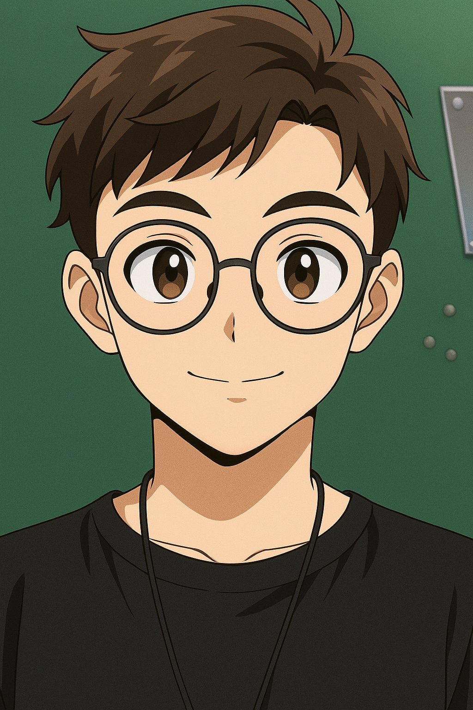
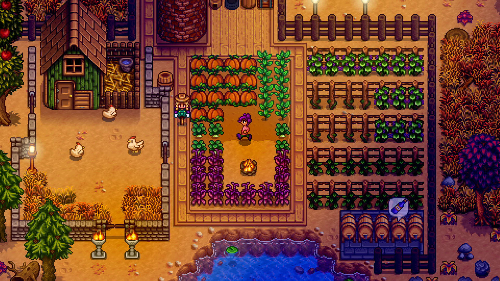

Seja muito bem-vindo ao meu cantinho na web!
Me chamo Matheus Sales Maia, tenho 19 anos e sou natural de Limoeiro do Norte, no Ceará. Atualmente, estou cursando o terceiro semestre de Ciência da Computação na Universidade Federal do Ceará, campus Russas. Entrei na universidade com 17 anos e desde então venho me apaixonando cada vez mais pelo mundo da tecnologia. Sou movido pela curiosidade, pela vontade de entender como as coisas funcionam e por esse desejo constante de evoluir.
Sou uma pessoa que acredita no equilíbrio: nada melhor do que uma boa pizza com batatas fritas e refrigerante para fechar o dia com chave de ouro. Entre estudos, códigos e linhas de comando, sempre reservo um tempo para relaxar, me divertir e aproveitar a vida com quem gosto.
Sou um apaixonado por jogos! Entre os meus favoritos estão títulos como Valorant — onde adoro competir e evoluir — e Stardew Valley, perfeito para relaxar e desacelerar.
Além dos jogos, musculação é parte da minha rotina. Treinar me ajuda não só a cuidar do corpo, mas também da mente. Gosto também de socializar: conversar, rir e jogar com os amigos me recarrega de um jeito único.
Tenho trilhado uma jornada de aprendizado constante. Já desenvolvi projetos com Python, trabalhei estruturas de dados em C e até criei páginas web como esta, com HTML e CSS, como parte dos meus estudos e práticas.
Meu principal objetivo hoje é me tornar um profissional completo na área da tecnologia. Estou sempre buscando aprender mais, explorar novas ferramentas, linguagens e técnicas, para que eu possa resolver problemas de forma prática, eficiente e criativa. Acredito que o conhecimento transforma, e quero transformar o mundo ao meu redor com as habilidades que estou desenvolvendo.